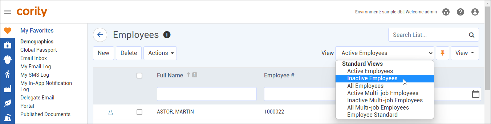
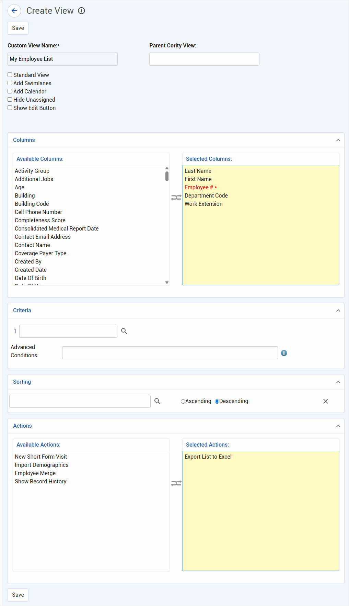
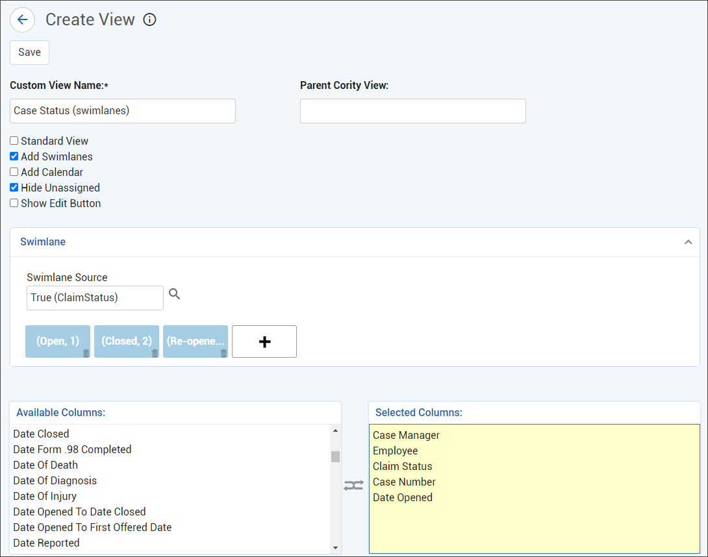
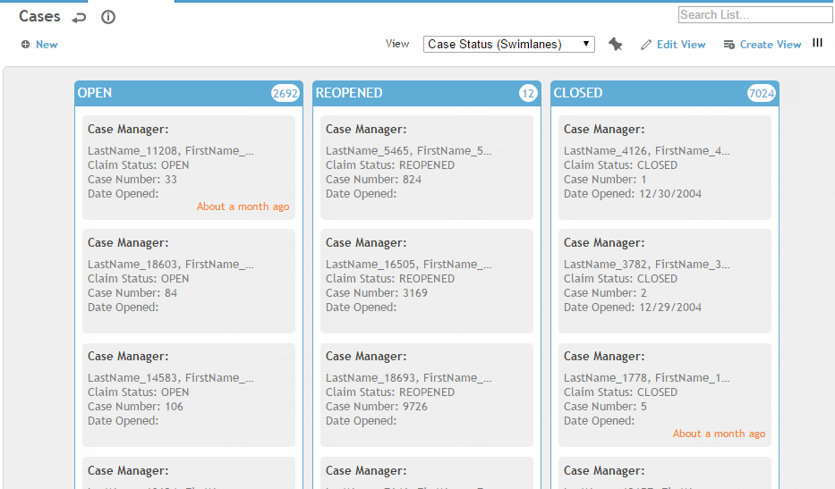
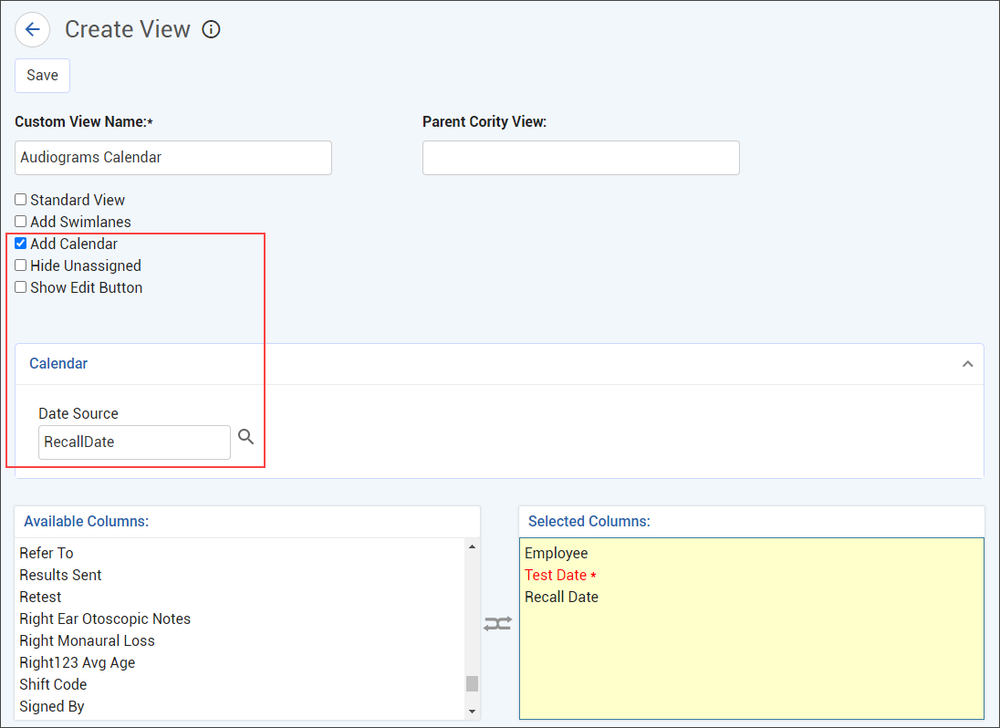
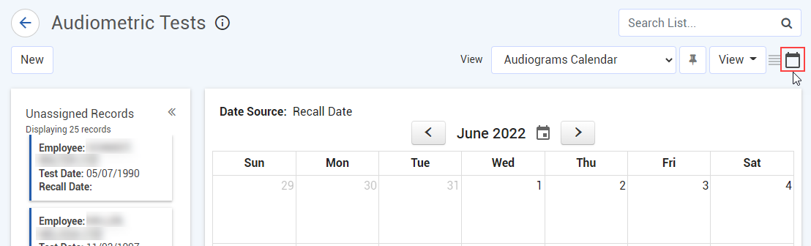
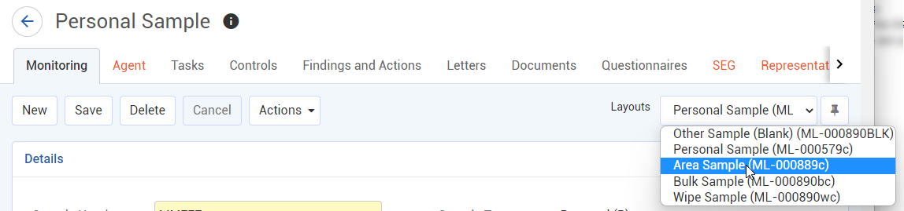

The fields shown on a list are defined in a “view”.
The fields shown on a module form are defined in a “layout”.
Displaying Workflow Steps on a Layout
All main module lists, as well as some sub-lists within modules, allow you to change the view. Depending on your role permissions, you may also be able to change picklist views.
If there is more than one view defined for a list, you can choose the desired view from the View field above the list. In the example below, you can view the Employee list by Active Employees, Inactive Employees or All Employees.

If you find you always prefer a particular view, you can set it as the default. Select the desired view and then click the pin to the right of the View field. The pin displays as orange for the default view, but remains grey for all other views. In the above example, the Active Employees view has been pinned as the default view.
Your administrator may assign a pinned view to your role. In this case you will be able to change views, but the pin will be disabled so that you cannot change the pinned view.
You can create your own custom views. For the example above, if your security access is limited to one Geographic Location (and therefore that location would be the only one displayed in that column), you might prefer to have your Employee List provide the Department column instead. Custom views allow you to view pertinent fields on the list screen instead of having to open records separately. Custom views are only visible to you (unless you are an Administrator and have saved the view as a standard view). See below for information about creating a custom view. To delete a custom view, select the view, click Edit View, and then click Delete.
See also Working with Swimlane Views and Setting Up Calendar Views.
Click Create View beside the View list.
To quickly recreate a list view based on another view, hover over the Create View link and choose Clone View instead, then make any changes required. Note that the name of the parent list view is displayed at the right of the edit view; if the parent list view has any hard filters, the clone will also have those hard filters. For example, if you clone the “Safety Incident - Injury/Illness” list view, the hard filter for only displaying safety incidents with injuries/illnesses will be cloned to the new list view.
The ability to create, clone, or access picklist views is subject to role permissions.
Enter a name for the view.
If you have administrator access, you can save the view as a Standard View. A Standard View will be available for all users to choose, unless it is specifically granted to one or more roles, in which case it is only available to those roles that have been granted access (see Setting Up Roles).
You can also make a standard list view available to users to add to their My Favorites menu. To enable this, once you have created the view hover over the Create View link and choose Add view to My Favorites Menu. If the view is later deleted or made non-standard, it will be deleted from all users' My Favorites to which it has been added. See Customizing Your Menu for information about adding a list to My Favorites.
All fields available on the form are displayed on the left. Drag the desired fields from the left to the right. Use your mouse to move the selected fields up or down, or to drag a field back to the left.
When cloning an existing view, the Selected Actions will be copied to the clone view. When creating a new view, the Selected Actions list in the editor will remain empty until actions are added. Actions prohibited from the user's role will remain unavailable.

Required fields are identified in red with an asterisk; you will not be able to save a record if any required fields are not populated, but you do not have to include them in your view.
Cority occasionally adds new fields to the list of fields available for a form; you may want to edit your custom views to incorporate these new fields.
When you create a custom view for a look-up table or Employee table, the second and third columns are combined and used as the field value when selected in a look-up field on a form, in the format “second column value (third column value)”. For example, if a custom view exists on the Agent Hazard look-up table with the fields Agent Code, Agent Description, and Agent CAS Number, when you select an agent on a form via this custom view the field will show “Agent Description (Agent CAS Number)”, e.g. “Nitrous oxide (10024-97-2)”.
Optionally, double-click on a field to change its properties, such as its label or making it a required field. These changes are only made in this view of this form and do not affect the field in other views or forms in Cority. Making a field required on a view is useful when you use in-line edit or in-line add on a view: the field must now be completed from the list view. This is different from making the field required on the layout (see Creating a Custom Layout or Setting Up Display Rules).
If the field supports multiple values, you can select the Enable Multiple Values checkbox to show these multiple values in the list view (maximum rows should then be limited to 50 to maintain performance). Filtering will use the "or" operator: for example, if you specify three values in the search field, the column will filter to records with any of Value 1, Value 2, or Value 3 in the field.
If you want to filter your list based on certain criteria, use the Criteria section as described in Query Filtering.
To set the sort order, select a field in the Sorting section and specify if it should sort in Ascending or Descending order. To have a secondary sort order, add another field.
You can choose any field to sort on, even if it’s not a selected field that will appear in the list.
If you choose a field that is not indexed, you will be warned that it could slow the performance. Indexed fields are those that have been explicitly coded to quickly sort in ascending and descending order. Typically, any field that would hinder system performance when a user would sort by that field has not been indexed to avoid such performance issues.
Each list has a default sort order which will be used if you do not select a field to sort on.
Swimlane views provide a different way to view and compare related states of records, how long each record has been in each state, and the owner of each record (Case and Demographics records). Depending how the swimlane was defined, you may be able to change a record’s state by dragging the record to another lane.
Creating a swimlane view:
Create a new view as described above.

Select the Add Swimlanes checkbox.
Select the Swimlane Source. This is the field in the record that the lanes will be organized by. A check mark in the Drag-And-Drop column (in the selection dialog box) indicates if the field supports dragging records between lanes.
The WorkflowStatus look-up table can be used as a Swimlane Source for creating a workflow swimlane view in supporting modules; update this table to define workflow steps.
If the Workflow field has been added to your form layout, it will be updated with the appropriate step from the WorkflowStatus look-up table when the record is moved from one swimlane to another.
Click + to select the field options that will be swimlanes. Drag the swimlanes to the desired order. You can add up to 10 swimlane columns (this number may be less depending on your display size); note that Unassigned will take one column unless you select the Hide Unassigned checkbox.
Only the top four Selected Columns will be displayed on each record when in Swimlane mode. If there are Selected Columns that are at the top of the list for a regular view that you do not want to display in swimlane mode, double-click on the column and select Hide Column Label on Swimlane Mode Records. For example, if there are eight selected columns and you want to display 1, 3, 5 and 6 in swimlane mode, select the checkbox for columns 2 and 4.
Define the Criteria and Sorting sections as described above.
Click Save.
Viewing a list in swimlane mode:
If a view is defined with a swimlane mode, click (to the right of the Create View link) to toggle between list mode and swimlane mode.

The total count for each column is displayed under the column heading, and a maximum of 100 records are displayed on each page. The bottom of each record displays the length of time the record has been in its current swimlane. For Case and Demographic records, the employee who owns the record is indicated, either by an image of the employee from their demographics record, or by their first initial.
If the selected Swimlane Source field supports drag-and-drop, you can move records from one lane to another. For example, you can update the Equipment Status by dragging an equipment record from one swimlane to another, but you cannot alter an immunization result by dragging an immunization record to a new swimlane.
A calendar view allows you to view the records according to the selected date source.
Creating a calendar view:
Create a new view as described above.

Select the Add Calendar checkbox.
Select the Data Source. All date fields related to the entity are listed. A check mark in the Drag-And-Drop column (in the selection dialog box) indicates if the field supports dragging records between lanes.
Select the Columns and define the Criteria and Sorting sections as described above.
Click Save.
Viewing a list in calendar mode:
If a view is defined with a calendar mode, click (to the right of the Create View link) to view the calendar; click to switch to list mode.

Records are displayed as calendar entries according to the selected date source. Any records that have a null/blank value in the selected date source field are listed in the “Unassigned Records” pane to the left of the calendar.
Records that fall on the same date will be displayed according to the sorting criteria defined for the view. Each date can display up to four records. If five or more records are associated with the same date, “+X more” will display at the bottom; click this to view the additional records.
Each record displays values for the first three columns defined for the view. When you hover over a record, a popup displays the values for the first seven columns defined for the view.
You can do any of the following in calendar view:
Use the Search List field to filter the calendar according to your search criteria.
Click a record on the calendar to open it.
To create a new record, click an empty date, or the empty space on a date that has records.
Drag-and-drop a record from one date to another. The date source on the record will be updated accordingly.
Drag-and-drop records from the “Unassigned Records” pane to the calendar. The date source on the record will be updated accordingly.
If the date source is read-only, or if the record is locked, signed, or lined out, you will not be able to drag-and-drop records to or within the calendar.
There may be multiple layouts defined for a module form that show different fields and/or sections, or show them in a different location. For example, IH Monitoring samples include layouts for Area, Personal, and Other.
If there is more than one layout defined for a form, you can choose the desired layout from the Layouts field above the form. You will only see layouts granted to your role.

If you find you always prefer a particular layout, you can set it as the default. Select the desired layout and then click the pushpin to the right of the Layouts field. The pushpin displays as orange for the default layout, but remains grey for all other layouts.
You can expand or collapse sections as required. If you want to retain those modifications, choose Actions»Save Layout. The next time you open that layout, the sections will be displayed as you configured them.
Only users with administrative rights can create a new layout or change what appears on a layout; for more information, see Defining Form Layouts.
A layout can be associated with a workflow banner so that you can view all the steps as well as quickly see the current step of a record.
The current workflow step will be highlighted in dark blue. If the record’s status is not defined in a workflow step, none of the steps in the workflow banner will be highlighted.
This banner requires the following setup:
A workflow defined in the Workflow look-up table.
The layout is associated with the workflow (see Defining Form Layouts).